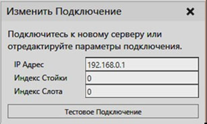
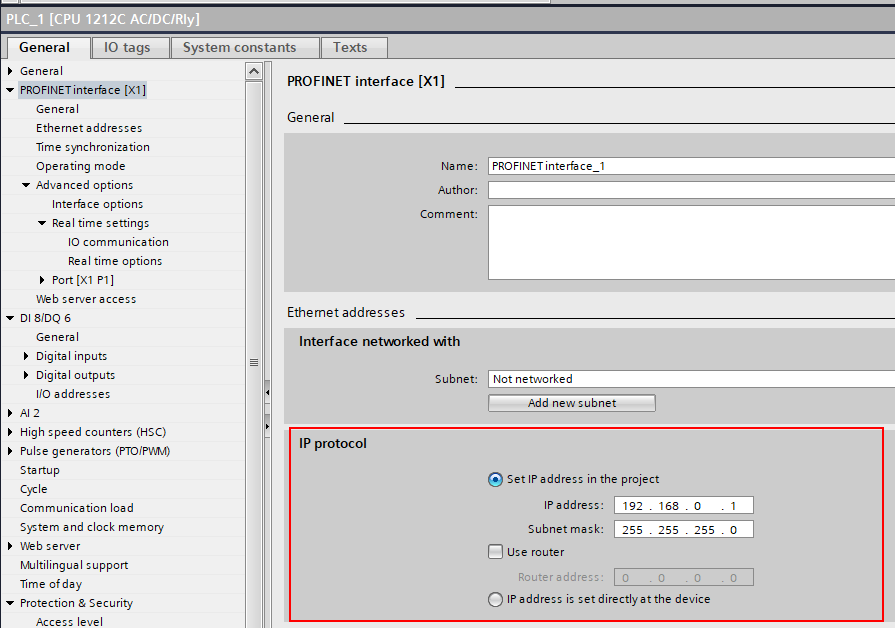
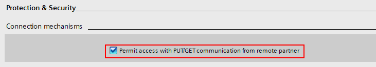

Плагин Siemens S7 позволяет подключаться к ПЛК Siemens серии S7, используя протокол связи S7 (S7comm). Более конкретно, он использует функции "PUT" и "GET" протокола S7comm. Он основан на TCP/IP и работает через Ethernet-соединение. Например, вы можете использовать плагин для подключения к физическим ПЛК серий S7-300, S-400, S7-1200 или S7-1500 или к симуляторам S7-1500 с помощью S7-PLCSIM Advanced.

Адреса подключения
Определите IP-адрес ПЛК или модуля коммуникационного процессора. Используется обычный адрес IPv4. Соединение всегда осуществляется с TCP-портом ПЛК 102.

Стойка и слот относятся к положению модуля ЦП ПЛК на задней панели.
Тип ПЛК |
Стойка |
Слот |
|---|---|---|
S7-300 |
0 |
2 |
S7-400 |
Н/п |
Н/п |
S7-1200 |
0 |
0 или 1 |
S7-1500 |
0 |
0 или 1 |
Примечание:
·Значения не являются фиксированными для ПЛК серии S7-400. Пожалуйста, обратитесь к Справочному руководству Sharp 7 для получения дополнительной информации о том, как определить значения.
Настройка проекта ПЛК
Сначала необходимо настроить ПЛК, чтобы разрешить доступ для чтения и записи через интерфейс S7comm. Необходимые шаги:
1.Настройка интерфейса Ethernet ПЛК
2.Определите параметр защиты и безопасности, чтобы разрешить доступ
·Отключить безопасность через настройку уровня доступа
·Разрешить связь PUT/GET
3.Отключить обновление физического ввода (необязательно)
Настройка интерфейса Ethernet ПЛК
Укажите IP-адрес ПЛК и любые другие сетевые настройки для связи TCP/IP.

Определите параметр защиты и безопасности, чтобы разрешить доступ
Отключите защиту с помощью настройки уровня доступа, выбрав нет защиты.

ПЛК с более старой версией прошивки, это выглядит следующим образом:

Разрешить обмен данными PUT/GET.

Отключить обновление физического входа (опционально)
Образ входного процесса может быть записан из симуляции для эмуляции входов ПЛК. Однако обновление любых физических входов-выходов на образ входного процесса должно быть отключено, чтобы значения, записанные из симуляции, не перезаписывались при каждом цикле ввода-вывода ПЛК.

Импорт таблицы тегов ПЛК
Информация о переменных ПЛК должна быть экспортирована из TIA Portal в файл SDF или Excel, а затем импортирована в плагин подключения Siemens S7. Таблицы тегов в TIA Portal (STEP7) используются для присвоения символических имен адресам ввода-вывода (I, Q) и назначения переменных общему пространству памяти (M).
Чтобы импортировать таблицу тегов:
1.Нажмите на вкладку Подключения, а затем в панели Конфигурация подключения, под Сименс С7 , выберите подключение к ПЛК .
2.На панели задач Свойства щелкните на Загрузить символы ПЛК из файла.
3.Выберите файл SDF или Excel для импорта.
Примечание:
·Загруженные теги сохраняются вместе с конфигурацией подключения как при сохранении планировки, так и при экспорте конфигурации подключения в формате XML.
·После импорта таблицы тегов вам может понадобиться перезагрузить дерево структуры сервера в окне Добавить переменные, чтобы увидеть переменные и изменения в них.
·При импорте таблицы тегов подключаемый модуль Siemens S7 автоматически обновляет любые существующие пары переменных на основе имен тегов . Если какие-либо пары переменных были обновлены, это отображается в виде сообщения на панели вывода.
·Автоматическое связывание по именам тегов позволяет вносить изменения в адрес памяти тегов и тип данных без необходимости повторного создания пар переменных.
·Чтобы это работало, имена тегов должны быть определены и уникальны. Если одно и то же имя тега появляется более одного раза в импортированных тегах, любые переменные с таким именем тега не обновляются, а на панели вывода печатается сообщение об ошибке.
Поддерживаемые области памяти ПЛК
Протокол S7comm обеспечивает доступ как для чтения, так и для записи к следующим областям памяти:
·Входной образ процесса (адрес I или E)
·Выходной образ процесса (адрес Q или A)
·Память (адрес «М»)
Примечание: Обычно образ процесса ввода перезаписывается с физических входов при каждом цикле ввода-вывода ПЛК. Однако вы можете отключить это в конфигурации ПЛК.
Ограничения
Имейте в виду, что существуют определенные практические ограничения при использовании протокола S7comm:
·Нет доступных функций просмотра, чтобы узнать, какие переменные существуют в ПЛК. Эта информация должна быть получена отдельно от инструмента программирования ПЛК TIA Portal.
·Вы не можете проверить, существует ли данная переменная в ПЛК. Протокол позволяет считывать и записывать различные области памяти ПЛК, но невозможно узнать, используются ли эти области памяти программой ПЛК должным образом.
·Связь не зашифрована и не поддерживает ввод пароля. Соединение должно осуществляться только в защищенной сети.
Производительность
Как правило, время отклика и пропускная способность, достигаемые с помощью подключаемого модуля Siemens S7, ограничиваются ПЛК. Однако, например, в случае физического S7-1200 связь S7comm по-прежнему значительно быстрее, чем встроенный сервер OPC UA.
Помните, что на производительность влияют следующие факторы:
·Запросы S7comm обрабатываются между программными циклами ПЛК, поэтому, если ПЛК выполняет объемную программу, которая потребляет практически все время ЦП, обмен данными может быть очень медленным.
·Ограничение размера PDU протокола S7comm весьма ограничено и составляет всего 240 байт для S7-1200 и 480 байт для S7-1500. Это ограничивает количество переменных, которые могут быть прочитаны или записаны с помощью одного запроса. Обработка каждого запроса на ПЛК имеет более или менее постоянную минимальную задержку, поэтому большое значение имеет количество запросов.
·Сетевая инфраструктура может вызвать значительное колебание задержки. По возможности отдавайте предпочтение прямому кабельному подключению к физическому ПЛК. Запуск смоделированного ПЛК на виртуальной машине также может снизить производительность.
Общие Подсказки для наилучшей производительности
·Избегайте создания ненужных групп переменных.
·Сделайте сетевую инфраструктуру, используемую для связи, максимально простой.
·Рассмотрите возможность увеличения минимального времени цикла ПЛК, если загрузка ЦП ПЛК высока.
Оптимизация чтения из ПЛК
Протокол S7comm не поддерживает считывание значений из ПЛК (подписок) на основе событий, поэтому единственным вариантом является циклическое обновление. То есть все переменные из ПЛК, определенные в группе переменных, считываются в каждом цикле.
Плагин Siemens S7 автоматически оптимизирует чтение переменных из ПЛК, группируя переменные со смежными или перекрывающимися областями памяти, которые считываются как блоки в рамках запросов MultiRead. Эта оптимизация оказывает большое влияние на количество запросов, необходимых для синхронизации группы переменных, и, следовательно, на минимально достижимую задержку. Чтобы использовать эту оптимизацию, примите во внимание следующие правила:
·Теги ПЛК должны располагаться непосредственно рядом в памяти без пробелов между ними или перекрывать друг друга.
·MW0 и MW2 являются соседними (байты 0-1 и 2-3)
·I0.7 и I1.0 являются соседними (бит 7 в байте 0, бит 0 в байте 1)
·I0.0 и I0.2 не являются смежными (бит 0 в байте 0, бит 2 в байте 0)
·IW0 и I1.2 перекрываются (байты 0 и 1, бит 2 в байте 1)
·I0.0 и M0.1 не являются смежными (разные области памяти I и M)
·Определите пары переменных в одной группе переменных (Сервер для симуляции потока данных). Оптимизация выполняется для каждой группы переменных независимо.
Оптимизация записи в ПЛК
Подсказки для лучшей производительности записи:
·Используйте режим циклического обновления, чтобы несколько переменных могли быть записаны в одном запросе MultiWrite. Установите разумный интервал обновления.
·Избегайте подключения слишком большого количества переменных, которые почти постоянно меняются, например, совместных значений.
·Рассмотрите возможность записи битов ввода-вывода как целых чисел без знака вместо отдельных логических значений. Это может значительно улучшить производительность, но вам потребуется сценарий на стороне R-Pro для преобразования логических значений (Bool) в биты из целочисленных (Integer).
·Требуется определить теги ПЛК типов unsigned int (например, BYTE или WORD) и соединить их с целыми числами в симуляции.
·Теги ПЛК могут перекрываться в памяти, поэтому вы также можете иметь отдельные теги для каждого бита ввода-вывода.
·Обратите внимание, что целые числа R-Pro имеют 32-битный знаковый тип, поэтому вы не можете использовать их для записи 32-битных значений в ПЛК, только 31-битные. На практике было бы лучше использовать отдельную переменную для каждых 16 бит ввода-вывода.